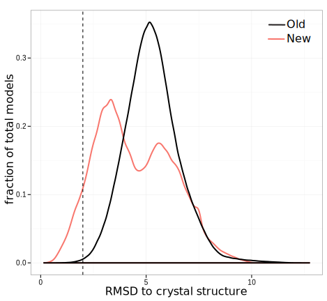

Development of Novel Methods for Computational Protein-Ligand Docking
Sam DeLuca
The Drug Discovery Pipeline
http://www.ncats.nih.gov/research/reengineering/process.html
Developing new drugs is challenging

- 1527 New Drug Entities 1940-2011
- Average of 21 NDEs/year
- New approved drugs cost ~$2.6B
Ligand Docking is inconsistantly successful

- Most ligand docking tools work in some cases
Davis et al. (2009). Protein Science. doi:10.1002/pro.192
The Rosetta Molecular Modeling Suite
- Originally a protein folding tool
- Expanded to protein design, protein-protein docking, protein ligand docking
- An extensible collection of tools for manipulating and scoring large molecules
Knowledge Based Potentials

- Statistically derived energy functions
- Capable of indirectly representing complex chemical properties
- Rosetta energy function is primary knowledge based
A brief history of RosettaLigand
- Originally developed in 2006 (Meiler and Baker)
- Extended to allow protein flexibility in 2008 (Davis and Baker)
- Redesigned for modularity and multiple ligand support in 2012 (Davis and Baker)
RosettaLigand: Docking Protocol
- Initial Placement
- Refinement
- Minimization
RosettaLigand: Initial Placement Scoring
RosettaLigand: Initial Placement Sampling
Grid energy function
- Translate — Translate ligand to a non-clashing position
- Rotate — Collect diverse rotations, select random non-clashing rotation
- Slide Together — Slide ligand toward center of protein till contact is made
RosettaLigand: Refinement and minimization
Rosetta energy function
- Alternating rounds of repacking and small ligand perturbation
- Minimization of entire complex
Improving RosettaLigand Sampling
Original RosettaLigand Initial Placement

New RosettaLigand Initial Placement

Improving RosettaLigand Performance
- Profile code to identify rate limiting steps
- Single slowest step was internal to Cartesian coordinate conversion
- Rosetta performs rotations in internal coordinate space
- RosettaLigand in initial placement grid is in cartesian space
Internal Coordinate Space

https://acbr12.wordpress.com/tag/peptide/
- Rosetta was optimized for large molecules
- General pattern: frequent internal coordinate changes, infrequent Cartesian lookup
- RosettaLigand initial placement: Cartesian lookup after every moves
Optimizing Ligand Rotation computations
- C++ compilers optimize the code you write
- They're better at this than you are
- Sometimes they need help
- RosettaLigand stores atoms in a Tree
- Atoms are not necessarily adjacent in memory
Optimizing residue storage for transformations
| x | y | z |
|---|---|---|
| 53.253 | 74.275 | 11.685 |
| 52.912 | 73.873 | 11.553 |
| ... | ... | ... |
- Contiguous array of residue coords
- Reference to original residue
- Internal ↔ Cartesian conversion only twice
- Compiler can properly optimize rotation operations
Comparing the new and old sampling methods

Protocol Terminology
- TransRot — Original initial placement protocol
- Transform — New initial placement protocol
- MCM — Alternating rounds of perturbation and repacking refinement
- MIN — Minimization only refinement
Setting up a high quality benchmark
- Community Structure Activity Resource
- 43 Protein subset of CSAR, excluding
- co-factors
- metal ions
- structural waters
Transform improves sampling speed

Transform improves probability of success

Transform improves benchmark success rate

Transform improves benchmark success rate

GridManager: framework for managing scoring grids
Shape complementarity KBP

Hydrogen bonding KBP

3-D environment KBP
- Set of 20 KBPs
- Bins based on distance and 2 angles
- Distance — Query-Cβ
- Θ angle — Query-Cβ-Cα
- Φ angle — Hα-Cα-Cγ-Query
- Grid score is Sum of KBPs
Protocol Terminology
- TransRot — Original initial placement protocol
- Transform — New initial placement protocol
- MCM — Alternating rounds of perturbation and repacking refinement
- MIN — Minimization only refinement
- 3-D — 3-D environment KBP
- 1-D — Shape + H-Bond KBPs
Q-Dock: A more challenging benchmark
- 154 Ligands-Comparative model pairs (1.4-24.0 Å RMSD)
- 10 low scoring relaxed models per complex
- Intrinsically more challenging than CSAR
New scoring grids do not improve success rate

Minimal difference in performance from grids

Transform improves symmetric ligand performance
3-D KBP may improve small ligand performance
No categorical difference between success and failure
ligand properties

No categorical difference between success and failure
ligand properties
No categorical difference between success and failure
protein properties
1-D KBPs for hand-docking in FoldIt
Rescoring docking results with ANNs
- Generalized Neural Networks are challenging
- We have both structure and ligand information
- Descriptors based on RosettaLigand scores
ANN Descriptors
- 13 RosettaLigand interface components
- 7 Interface descriptors (SASA, packstat, etc)
- 10 Scalar Ligand descriptors
- 288 Rosetta Radial Distribution Function (RDF) columns
$$g(r) = \sum_{\substack{i,j}}score_{ij}e^{-B(r-r_{ij})^{2}}$$
Tools for Screening
- Bulk Parameterization
- Create ligand conformers
- Generate Rosetta parameter files
- Attach experimetnal data
- Screening Job Inputter
- Automated cross-docking
- Large screens can be split into small chunks
- SQL output
- Relational database storage of models
- Online filtering by score
- Tracking of protocols parameters
Training and benchmarking data
- High quality training sets are hard to come by
- Training: 120 proteins-ligand complexes from PDBbind, crossdocked
- Benchmarking: DEKOIS 2.0: 80 proteins, 16,080 ligands
Cross-Validation performance
Benchmarking performance